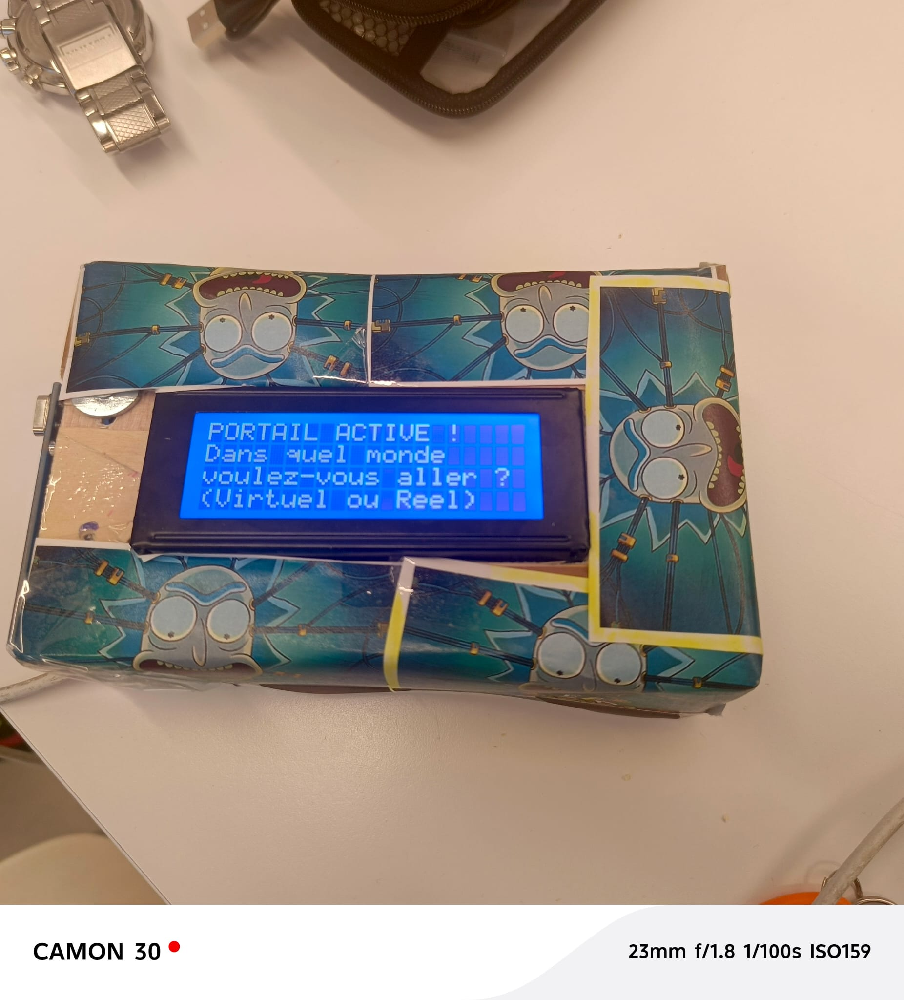
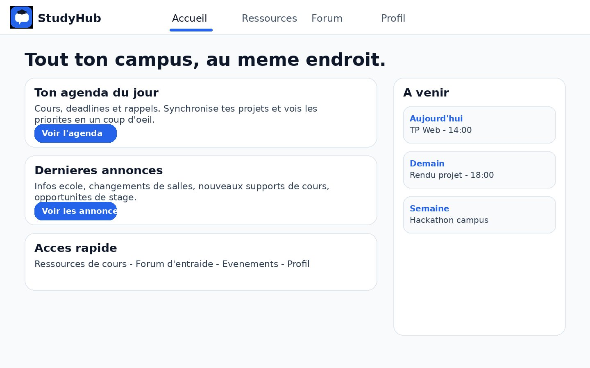
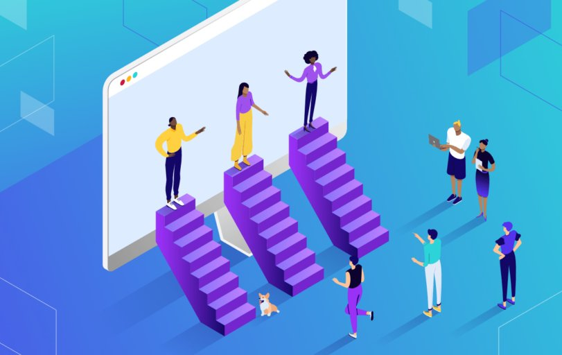
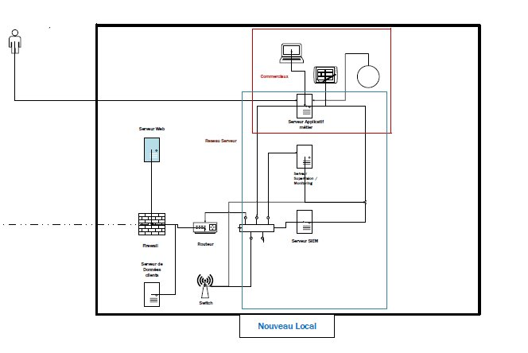
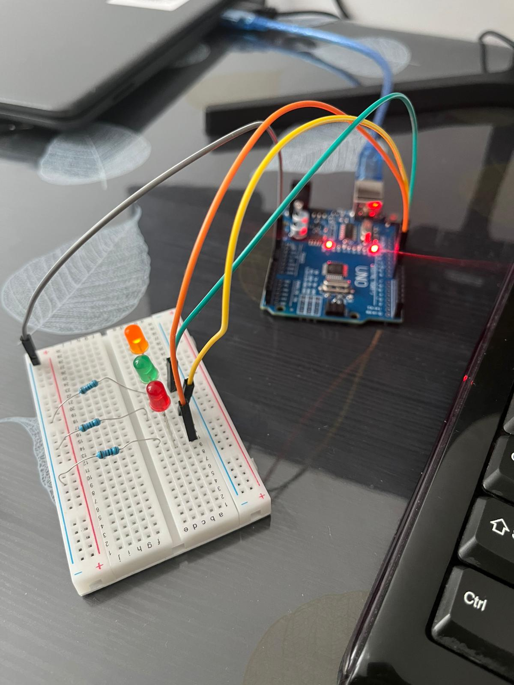
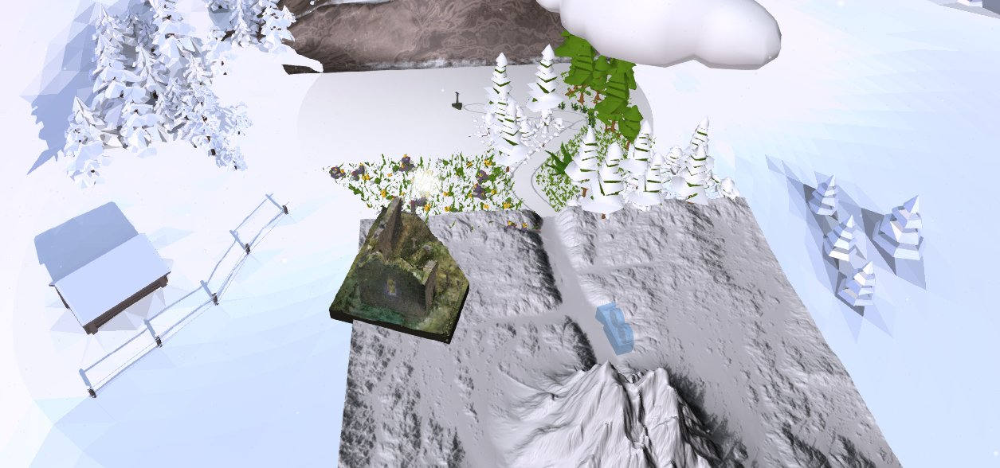
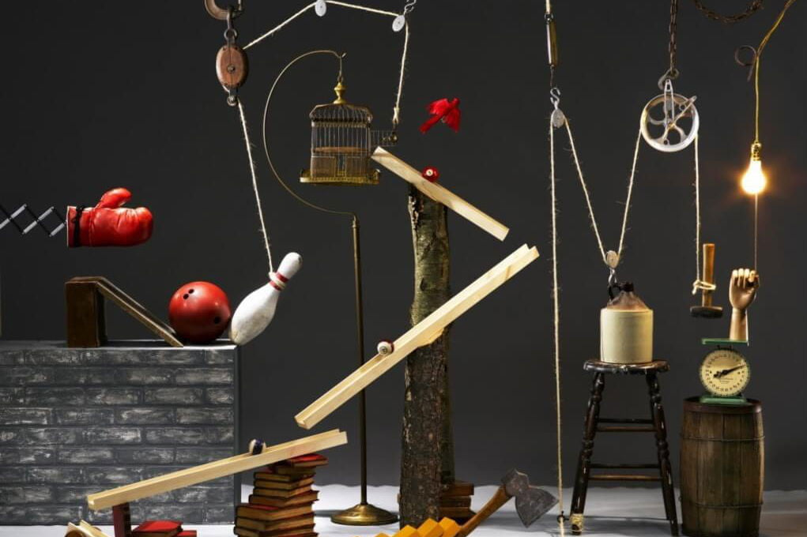
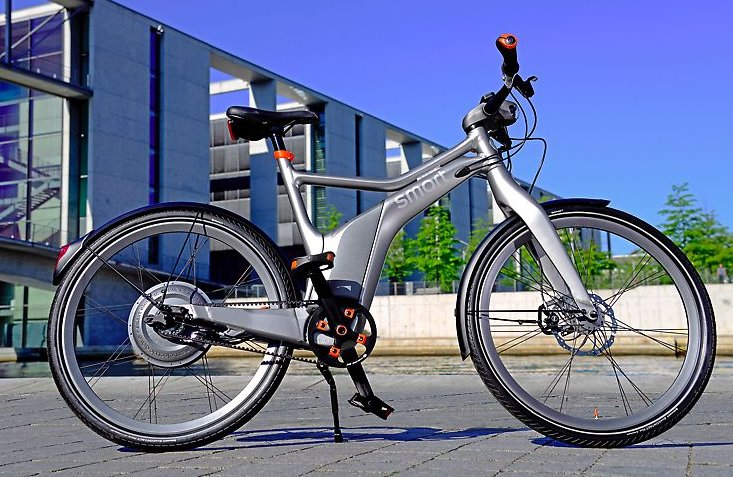

Rick Virtual World
Portail interactif : badge RFID, question vocale, transcription IA et univers immersif.
Mes projets académiques et professionnels en développement, réseaux, électronique et expériences immersives.
12 projets

Portail interactif : badge RFID, question vocale, transcription IA et univers immersif.

Console d’administration responsive, modération des utilisateurs et intégration d’une API NestJS.

Maquette de plateforme étudiante pour centraliser ressources, échanges et profils utilisateurs.

Plateforme e-commerce avec authentification, catalogue et panier dynamique.

Infrastructure virtualisée, segmentation réseau, pare-feu et services d’entreprise.

Conception, câblage et programmation d’un séquenceur électronique embarqué.
Système d’arrosage intelligent autour de capteurs, d’automatisation et de suivi.
Application de gestion de restaurant : commandes, stocks et facturation.

Conception d’environnements 3D immersifs et de narration interactive.

Machine de Rube Goldberg : conception mécanique, présentation devant jury et première place locale.

Plateforme e-commerce avec gestion des utilisateurs et des commandes, réalisée en équipe de cinq.
Une collection de réalisations techniques pour explorer l’algorithmique et les fondamentaux de l’informatique.
En cinq jours de Scrum, notre équipe a relié électronique, IA et expérience immersive dans un portail interactif.